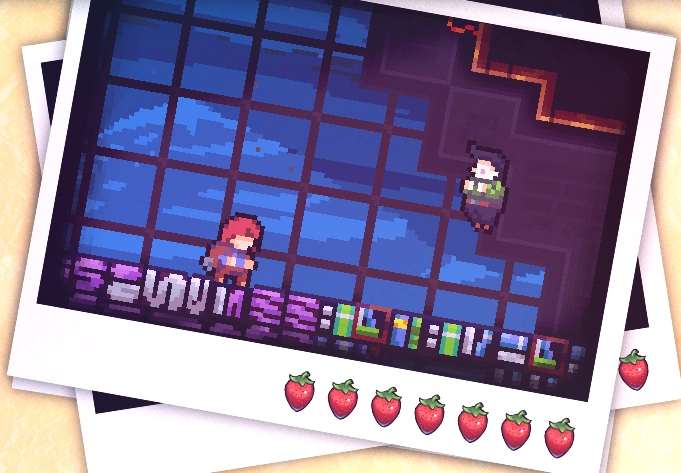
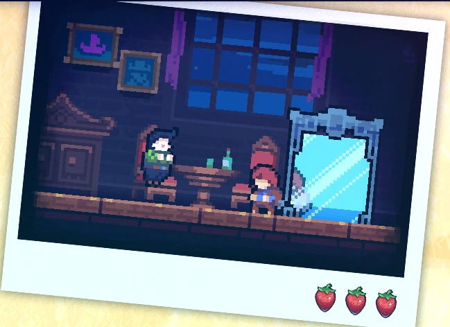

Capítulo 3: Resort Celestial
Resort Celestial é o terceiro capítulo de Celeste. Sua jogabilidade é precisa, fazendo que o capítulo seja considerado por alguns masi dificíl que capítulos posteriores.
Mecânicas
Resort Celestial introduz 11 novas mecânicas:
• Sujeiras,
• Chaves,
• Fechaduras,
• Plataformas geradoras de sujeira,
• Água,
Plot
Resort Celestial introduz 1 nova personagem:
• Oshiro.

Madeline encontra um hotel decadente e conhece Mr. Oshiro, o concierge, que insiste para que ela fique, apesar de sua intenção de partir. Enquanto Madeline ajuda a limpar o hotel bagunçado, Theo sugere uma fuga, mas Madeline permanece determinada a ajudar Mr. Oshiro. Apesar de seus esforços, o colapso de Mr. Oshiro leva a um confronto na suíte presidencial, onde Badeline intervém, expondo as intenções equivocadas de Mr. Oshiro. Após um encontro tenso, Madeline e Mr. Oshiro acabam no telhado do hotel, resultando no fechamento do local para reparos. Apesar do tumulto, Madeline continua sua jornada, deixando Mr. Oshiro para trás.
Diálogos
Coletáveis
Coração de cristal:
O coração de cristal do capítulo 3 é adquirido no segundo subcapítulo, onde o jogador terá a tarefa de limpar a bagunça do hotel. Para adquirir o coração de cristal, o jogador precisará seguir o caminho da direita (onde Theo é encontrado). Após apertar o botão, é necessário seguir para a direita, onde existe uma queda-d'agua, assim revelando uma passagem secreta. O jogador deverá fazer o caminho contrário até chegar na sala onde o Theo é encontrado. No teto da sala, haverá uma passagem secreta onde o coração é encontrado.

Fita cassete:
A fita cassete do capítulo 3 é adquirida no terceiro subcapítulo após acessar uma passagem
secreta. Na sala da fita cassete, são encontradas plataformas rítmicas. Após alcançar o
objetivo, uma bolha transportara o jogador de volta para o começo da sala.
- Veja: como encontrar...

Morangos:
• Morango dourado:
Conseguido após concluir a fase enquanto segura o morango dourado. Só pode ser coseguido após concluir o lado B do capítulo 8.
• Morango vermelho:
Morango 1: Morango vermelho:
Morango 2: Morango vermelho:
Morango 3: Morango vermelho:
Morango 4: Morango vermelho:
Morango 5: Morango vermelho:
Morango 6: Morango vermelho:
Morango 7: Morango vermelho com asas:
Morango 8: Morango vermelho:
Morango 9: Morango vermelho:
Morango 10: Morango vermelho:
Morango 11: Morango vermelho:
Morango 12: Morango vermelho:
Morango 13: Morango vermelho:
Morango 14: Morango vermelho:
Morango 15: Morango vermelho com asas:
Morango 16: Morango vermelho:
Morango 17: Morango vermelho:
Morango 18: Morango vermelho:
Morango 19: Morango vermelho:
Morango 20: Morango vermelho:
Morango 21: Morango vermelho:
Morango 22: Morango vermelho:
Morango 23: Morango vermelho:
Morango 24: Morango vermelho:
Morango 25: Morango vermelho:
Subcapítulos
Resort Celestial possui 4 subcapítulos:
Início

Grande Bagunça
Poço do Elevador

Suíte Presidencial
